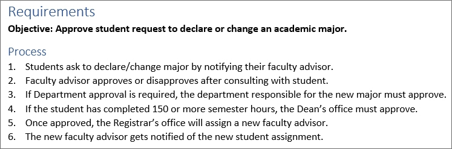
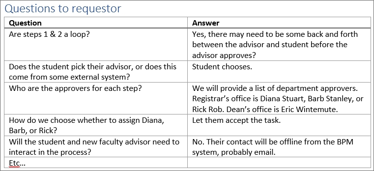
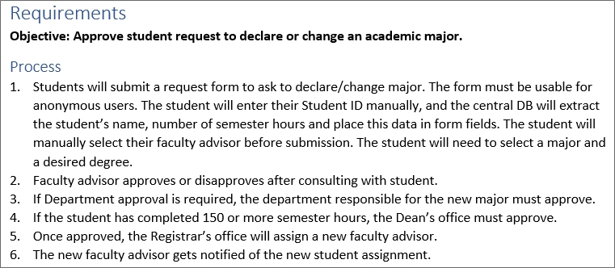
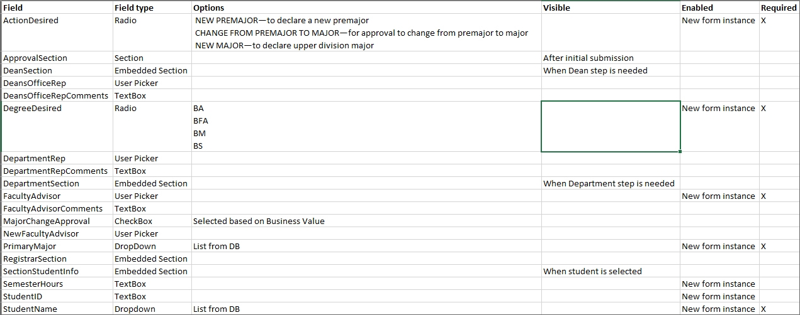
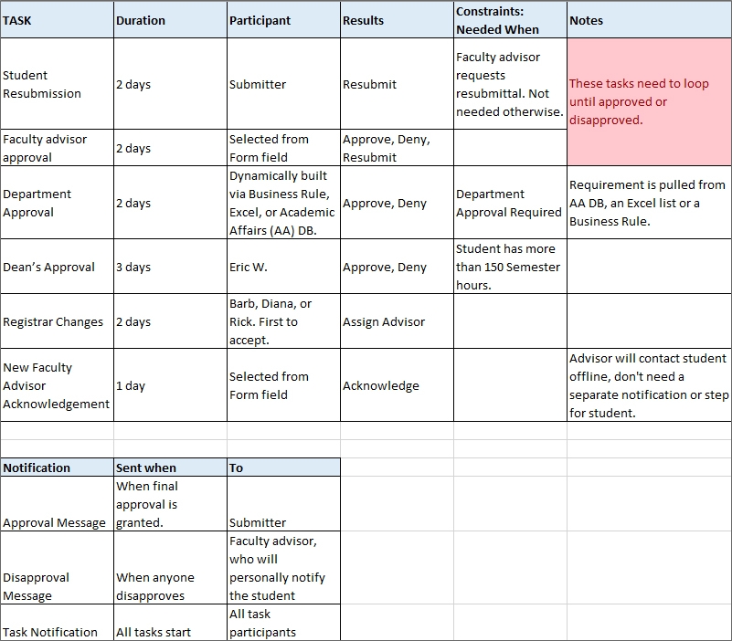
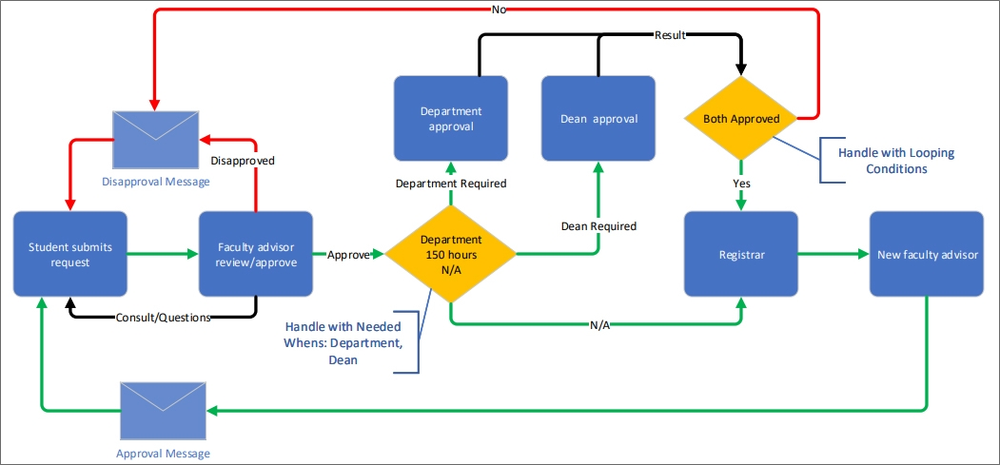
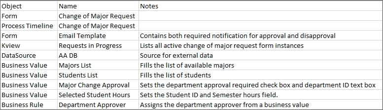

Most development projects start when the primary customer requests an application to automate a specific process. As the developer, the first thing you'll need from the customer is a list of requirements in some sort of requirements document. This requirements document, in the best of all possible worlds, would specify what process you're trying to model, how it works, the information the customer needs, and other items, but…it probably won't.
The first problem you need to confront in gathering requirements is a mental one. The customer knows what the process is and has probably been using it for a while. Most processes you automate are, after all, existing processes. The customer may know the process inside and out, which is good, but you probably aren't as familiar with it. Gathering requirements from subject matter experts can be tricky. The customer is usually so familiar with the process that they assume you understand some simple basics about the process that are obvious to them but aren't obvious to you at all.
So, your initial requirements document might look something like this:

This is not bad, and it does give you a lot of important information. But there's also a lot of detail missing that you'll need to get from the customer. Remember, to the customer, who is very familiar with the process, this short document tells them everything they need to know. But, that's because, at this point, the customer knows a lot more about the process than you.
Your job, at this point, is to expand the requirements with the details you need to build the application properly. As the requirements become more detailed, you need to document these details, and collaborate with your customer on building the detailed requirements.
As you create the additional documentation you need to build the detailed requirements, you need to share the expanded documentation with your customer, to ensure that both they and you agree on what the application will do, and how it will work. Both you and the customer should have a shared understanding of what the scope of the project entails before you begin building the application.
So, remember: Share all of the documentation with the customer!
With that in mind, let's look at how to go about expanding the specifications with the details you need to build an application that meets your customer's expectations.
You will need to analyze each step in the process and ask the customer questions about anything that is unclear. Let's look at the first step in the requirements and see what questions we can come up with.
Your first step may be as simple as clarifying some ambiguous language.

Students ask to declare/change major by notifying their faculty advisor.
Does this mean that students notify their faculty advisor and that the faculty advisor initiates the request in Process Director, or does it mean the student submits the request in Process Director, and the faculty advisor needs to be tasked with reviewing and approving it? The answer to these questions will make the application's starting activities fundamentally different.
While we won't take the time to do so, we can ask a lot of questions about every step in these simple requirements. Here's a little sample of what we might need to know, though:
So, at this stage, you need to keep two things in mind:
One useful thing you might do is make up a questionnaire that you can send to the customer to answer your questions.
As the customer answers questions, those answers must be incorporated into the specifications. The specifications document will, therefore, grow as you receive answers.
Let's say the answer to who submits the request in Step 1 is that the student will make the request in Process Director. If so, then other issues might arise that, while not immediately necessary to address, will eventually become part of the application, and should be documented.

As you can see, just asking one simple question opens up a lot of different possibilities, and the requirements document will grow to incorporate the answers. Ultimately, the first step of the requirements document will become much longer.
As you begin expanding the requirements to specify exactly what will happen at each step of the process, you'll need to begin documenting the data you'll need to collect as part of the process. You'll also begin mapping that data to form fields. For instance, we know that, based just on what we see here, that there are several data fields we need to collect.

Each of these pieces of data must be entered into some type of form field on the form we must create for the application. In addition, thinking about what data fields we need, we need to think about when the fields should be visible or enabled. Some fields may also be dropdowns or radio buttons with more than one option to select. You should document what these options will be, and whether you'll need to create them manually, or pull them from a data store.
One simple way to document all this is to create an Excel spreadsheet to list all the data fields we will need, and how the form will handle the data.
There are, of course, many ways to document these items, and this is just one suggestion. Feel free to document the data and field requirements in a way that makes sense to you.
Just as you need to start mapping the data requirements, you also need to start mapping the process requirements at the same time. You may want to start by listing the activities that will have to be completed as part of the process, and add the following information to each task:

Concurrently, you'll also want to list the different notifications that will be part of the application, when they'll be sent, and who will receive them.
Once again, you may find it easiest to document this in an Excel spreadsheet.

In addition, you may find that mapping the process in a diagram helps you to understand how the process will work. Diagrams like flowcharts or Gantt charts often help you visualize the main steps that have to be performed by a process. Any diagram, of course, is a simplification, and may leave out many details, but you may find them useful for organizing the process, decision steps, and notifications in a way that is easy to understand.
Finally, as you begin accumulating more details about the requirements, you can begin mapping out the various objects that will be needed to build the application. Obviously, we'll need a Form, a Process Timeline, and a Knowledge View or two. But there are other objects we need to consider as well.

For example, we know that we'll need to use some data from an external data source to find the student's name, faculty advisor, and other information. We will need some Business Values to retrieve that data. That tells us that we need to list the Business Values as required objects for the application.
All these objects should be listed prior to developing the application. Again, a simple Excel spreadsheet can be used, though you can, of course, use whatever method of documenting these items that works best for you.
At this point, you may be wondering why all of this is necessary. Why not just start building objects in Process Director? Well, there are several good reasons for documenting all these details before you begin building the application.
Even a simple application, like this one, may have some unusual complexities. Documenting the requirements in detail prior to development ensures that you find these complexities, and plan for how to incorporate them. If you've already started building the application before you understand these complexities, you may have to rebuild a significant portion of your application, which will add to the time and cost of creating the application.
Your customer will probably want an estimate of when the application will be completed. Documenting the application in detail enables you to provide a reliable estimate of the time, and, if applicable, the cost, of building the application.
Knowing ahead of time what the scope of the application is will make building the application much easier for you. Prior to building anything in Process Director, documenting requirements in detail ensures that you already know what Form fields you'll need, what the timeline activities will be, and how they are constrained, and what objects need to be created. This foreknowledge will make the job of building the application much easier.
Finally, because Process Director objects work together so closely, specifications are a vital part of knowing how all the different objects work together, and how they depend on each other. We will discuss this in more detail in the next lesson.
Finally, documenting the application's requirements in detail, and sharing these details with your customer ensures that both you and the customer understand and agree.
Gathering specifications and documenting them in detail may seem like a lot of work, but it's vitally important that both you and the customer agree on what the application entails and how it will work. Having this agreement with the customer before beginning ensures that you are both expecting the same result and working for the same goal. Once you and the customer have a shared set of expectations, you can be confident in moving forward with creating the application.
Continue to the Development Stage of the application development process.